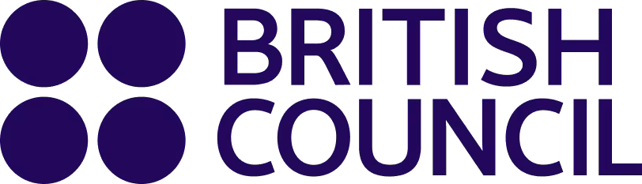

Aptis Advanced
Practise the grammar and vocabulary section of the Aptis test. Work through each question at your own pace and check your answers whenever you choose.
No time limit · Your score and a full review appear at the end.

All your answers will be cleared and you will return to the start page. This cannot be undone.